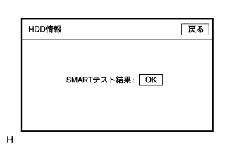

reference.
reference.HDD navigation system function inspection |
| 1. Display color bar inspection |
reference.Diagnostic activation
Start the diagnostic and display the diagram test menu screen.(The point isreference)
Select "Display Inspection" on the diagram inspection menu screen and display the display inspection menu screen.
Select "Color Bar Test" on the display inspection menu screen and display the display color bar inspection screen.
Display color bar inspection
Confirm that the configuration color and the display color match.
Confirm that there is no difference compared to the display color of the navigation color bar inspection.
| 2. Display touch switch inspection |
reference.Diagnostic activation
Start the diagnostic and display the diagram test menu screen.(The point isreference)
Select "Display Inspection" on the diagram inspection menu screen and display the display inspection menu screen.
Select "Touch Switch Inspection" on the display inspection menu screen and display the display touch switch inspection screen.
Display touch switch inspection
Touch the screen to confirm that the cross cursor is displayed at the touch location.
| 3. Display panel switch test |
reference.Diagnostic activation
Start the diagnostic and display the diagram test menu screen.(The point isreference)
Select "Display Inspection" on the diagram inspection menu screen and display the display inspection menu screen.
Select "Panel Switch Test" on the display inspection menu screen and display the display panel switch inspection screen.
Panel switch test
Operate each switch and confirm that it matches the screen display.
| display | Content |
|---|---|
| Pressing switch name |
|
| Operation switch name | Display the name of the operated rotary switch (the screen display is erased by no operation for 6 seconds) |
| Switch rotation direction | Display the status of the operated rotary switch (the screen display is erased by no operation for 6 seconds) |
| Display menu | Call the display inspection menu screen |
| 4. Display vehicle signal inspection |
reference.Diagnostic activation
Start the diagnostic and display the diagram test menu screen.(The point isreference)
Select "Display Inspection" on the diagram inspection menu screen and display the display inspection menu screen.
Select "Vehicle Signal Test" on the display inspection menu screen and display the display vehicle signal inspection screen.
Display vehicle signal inspection
Check the status of the vehicle signal incorporated into the display (navigation receiver ASSY).
| item | Display method | Signal input terminal |
|---|---|---|
| Battery voltage | Display battery voltage [V] | Navigation receiver ASSY+B (A4) terminal |
| Different G | Display the state of the IG signal with "ON"/"OFF" | Navigation receiver ASSY IG (F2) terminal |
| PKB | Display the condition of the parking brake with "ON"/"OFF" (IG switch ON) | Navigation receiver ASSY PKB (F1) terminal |
| Ve V | Display the REV signal condition with "ON"/"OFF" (when IG Switch ON) | Navigation receiver ASSY REV (F5) terminal |
| Car speed | Calculate the pulse signal of the SPD in the vehicle speed and display it | Navigation receiver ASSY SPD (F3) terminal |
| Thailand L | Display the status of the Tail signal (head lampsche) with "ON"/"OFF" | Navigation receiver ASSY ILL+(A10) terminal |
reference)| 5. Vehicle signal & sensor inspection |
reference.Diagnostic activation
Start the diagnostic and display the diagram test menu screen.(The point isreference)
Select "Navi Inspection" on the diagram inspection menu screen and display the navigation inspection menu screen.
Select "Vehicle Signal & Sensor Inspection" on the Navi Inspection menu screen to display the vehicle signal & sensor inspection screen.
Vehicle signal & sensor inspection
| item | Display method | Signal input terminal |
|---|---|---|
| REV signal state | Display the REV signal status with "ON"/"OFF" (when IG ON) | Navigation receiver ASSY REV (F5) terminal |
| SPD signal state | Display the SPD signal status (Cumulative number of input pulse after this screen and vehicle speed [km/h]) | Navigation receiver ASSY SPD (F3) terminal |
| Gyrrhensor output status | Displays the output status of the gyro sensor (Voltage value [V] and the amount of change in the direction after displaying this screen [degree]) | - |
| Tulle angle sensor output status ( * 1) | Displays the output status of the inclined angle sensor (Changing of the vehicle tilt angle after displaying this screen [degree]) | - |
| Reset | Reset the display item of the relative orientation of the gyro sensor and the number of pulses of the SPD signal and the display contents are "0". | - |
Confirm the status of the vehicle signal (REV, SPD) incorporated into the navigation receiver ASSY.
reference)Check the output status of the gyro sensor.
Drive on a slope, etc. to check the output status of the inclined angle sensor.
| 6. CAN connection inspection |
reference.Diagnostic activation
Start the diagnostic and display the diagram test menu screen.(The point isreference)
Select "Display Inspection" on the diagram inspection menu screen and display the display inspection menu screen.
Select "CAN connection test" on the display inspection menu screen to display the CAN connection confirmation screen.
CAN connection inspection
Confirm the status of CAN communication connected to the navigation receiver Assembly.
,,reference)| 7. Navi Color Bar Inspection |
reference.Diagnostic activation
Start the diagnostic and display the diagram test menu screen.(The point isreference)
Select "Navi Inspection" on the diagram inspection menu screen and display the navigation inspection menu screen.
Select "Color Bar Test" on the navigation inspection menu screen to display the navigation color bar inspection screen.
 |
Navi color bar inspection
Confirm that the configuration color and the display color match.
Confirm that there is no difference compared to the display color of the display color bar inspection.
| 8. HDD information |
reference.Diagnostic activation
Start the diagnostic and display the diagram test menu screen.(The point isreference)
Select "Navi Inspection" on the diagram inspection menu screen and display the navigation inspection menu screen.
Select "HDD test" on the navigation inspection menu screen to display the HDD information screen.
 |
HDD information
Check the code and take action according to the list.
| display | Content |
|---|---|
| code | Display code according to the abnormalities |
| Occurrence time |
|
| before | Display the previous page (tone down when the top is displayed) |
| Next | Display the next page (tone down when the bottom is displayed) |
| Smart test | SMART test |
| Diag eraser | Erase all the diagram information in the display (hold and hold for 3 seconds) |
| code | Abnormality | treatment | remarks |
|---|---|---|---|
| 01 | I can't recognize HDD | Navigation receiver ASSY replacement | - |
| 03 | READ error (-20 ° C exceeds ← → less than 65 ° C) | If this code occurs frequently due to symptoms such as not displaying maps/cannot be registered in memory, the navigation receiver ASSY replacement | - |
| 04 | Write error (-20 ° C exceeds ← → less than 65 ° C) | If this code occurs frequently due to symptoms such as not displaying maps/cannot be registered in memory, the navigation receiver ASSY replacement | - |
| 13 | READ error & low temperature (-20 ° C or less) | Ig ON and make sure that the temperature of the navigation receiver ASSY has been sufficiently high | It is a code recorded when Read/Write occurs when the temperature of the HDD is out of the operation warranty temperature, which is not abnormal. |
| 14 | Write error & low temperature (-20 ° C or less) | Ig ON and make sure that the temperature of the navigation receiver ASSY has been sufficiently high | It is a code recorded when Read/Write occurs when the temperature of the HDD is out of the operation warranty temperature, which is not abnormal. |
| 23 | READ error & high temperature (65 ° C or higher) |
| It is a code recorded when Read/Write occurs when the temperature of the HDD is out of the operation warranty temperature, which is not abnormal. |
| 24 | Write error & high temperature (65 ° C or higher) |
| It is a code recorded when Read/Write occurs when the temperature of the HDD is out of the operation warranty temperature, which is not abnormal. |
|
Smart test
Select the "Smart test" on the HDD information screen and display the Smart test result.
|  |
Check the Smart test result.
| 9. Navigation guidance audio setting confirmation (guidance voice does not sound) |
Setting inspection
Set the volume to the maximum volume in the audio settings on the menu screen.
| 10. Gyro initialization confirmation (when rotating your own vehicle position) |
Re -operation
IG Switch OFF → ON.